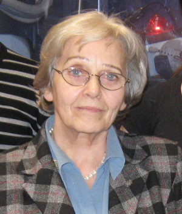
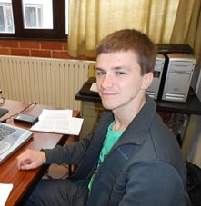

Group Leader
|  |
|
Prof. Katarzyna Marta Stadnicka katarzyna.stadnicka [at] uj.edu.pl stadnick [at] chemia.uj.edu.pl room E2-29 +48 12 686 22-29 |
Group Members
|
Dr. Anna Krawczuk
anna.krawczuk [at] uj.edu.pl krawczuk [at] chemia.uj.edu.pl room C2-21 +48 12 686 24-72 |
Dr. Marlena Gryl
marlena.gryl [at] uj.edu.pl gryl [at] chemia.uj.edu.pl room C2-21 +48 12 686 24-72 |
|  | |
|
Dr. Agnieszka Skórska-Stania
agnieszka.skorska-stania [at] uj.edu.pl skorska [at] chemia.uj.edu.pl room C2-13 +48 12 686 24-67 |
Dr. Tomasz Seidler
tomasz.seidler [at] uj.edu.pl seidler [at] chemia.uj.edu.pl room C3-24 +48 12 686 23-92 |
PhD students
|
Joanna Wojnarska (PhD student) joanna.wojnarska [at] student.uj.edu.pl room C2-31 +48 12 686 24-82 |
Leszek Malec
leszek.malec [at] student.uj.edu.pl room F0-35 +48 12 686 22-96 |
Agnieszka Rydz
agnieszka.rydz [at] student.uj.edu.pl room C2-31 +48 12 686 24-82 |
Former PhD students
|
|
Joint Theoretical and Experimental Studies of Correlations between Microscopic and Macroscopic Optical Properties of Crystals. Faculty of Chemistry UJ, Kraków 2014. The PhD thesis was completed within the MPD Studies Thesis was distinguished by the Faculty Board. |
|
|
Oddziaływanie wybranych linii komórkowych z monokrystalicznymi płytkami mineralnego apatytu o znanej orientacji krystalograficznej. Faculty of Chemistry UJ, Kraków 2013. Thesis was distinguished by the Faculty Board. |
|
|
Strukturalna i fizyko-chemiczna charakterystyka niebieskich soli z Kopalni Kłodawa oraz zawartych w nich inkluzji stałych. Faculty of Chemistry UJ, Kraków 2012. |
|
|
Crystal Engineering of Materials with Prospective Non-linear Optical Properties. Faculty of Chemistry UJ, Kraków 2011. Thesis was distinguished by the Faculty Board. |
|
Dr Alicja Janik |
Badanie oddziaływania antyarytmików z kanałami jonowymi metodami dyfrakcji rentgenowskiej, NMR oraz modelowania molekularnego. Faculty of Chemistry UJ, Kraków 2009. |
|
|
Chiralność kryształów w aspekcie badań aktywności optycznej i eksperymentalnego rozkładu gęstości elektronowej. Faculty of Chemistry UJ, Kraków 2009. Thesis was distinguished by the Faculty Board. |
|
Dr Łukasz Wojtas |
Projektowanie, otrzymywanie i charakterystyka strukturalna kryształów o potencjalnych nieliniowych własnościach optycznych. Faculty of Chemistry UJ, Kraków 2006. The thesis was distinguished by the Faculty Board. |
|
Dr Mateusz Pitak |
Badanie eksperymentalnego rozkładu gęstości elektronowej wybranych faz krystalicznych w aspekcie oddziaływań międzycząsteczkowych. Faculty of Chemistry UJ, Kraków 2006. |
|
Dr Maciej Hodorowicz |
Badania strukturalne wybranych krystalicznych soli amonowych w aspekcie ich potencjalnych zastosowań w dziedzinie biomateriałów. Faculty of Chemistry UJ, Kraków 2005. |
|
Dr Agnieszka Broda |
Zależność pomiędzy strukturą a działaniem farmakologicznym wybranych pochodnych 5,5-difenylohydantoiny. Faculty of Chemistry UJ, Kraków 2004. |
|
Dr Anna Gawlicka-Chruszcz |
Porównawcze badania struktur krystalicznych zawierających oligomery polianiliny. Faculty of Chemistry UJ, Kraków 2003. |